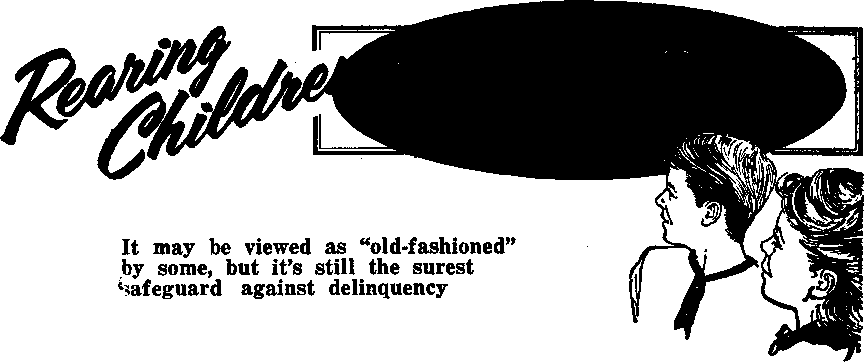

Thanksgiving Day—What Does It Mean?
PAGE 5
Is There Harm in Rock Roll?
RAGE 9
How Safe Are Oral Contraceptives?
RAGE 13
When Disaster Strikes, What Will You Do?
RAGE 22
NOVEMBER 8. 1969
THE REASON FOR THIS MAGAZINE
News source* that are able to keep you awake to th* vital 1**ue» of our times must be unfettered by censorship and selfish interests, “AwakeI" has no fetters, ft recognizes facts, faces facts, is free to publish facts. It is not bound by political ties; it is unhampered by traditional creeds. This magazine keeps itself free, that it may speak freely to you. But it does not abuse its freedom. It maintains integrity to truth.
- The viewpoint of "Awake!" is not narrow, but Is international. "Awake!" hat its own correspondents in scores of nations. Its articles are read In many lands, In many languages, by millions of persons.
In every issue "Awake!" presents vital topics on which you should be informed. It features penetrating articles on social conditions and offers sound counsel for meeting the problems of everyday life. Current news from every continent passes in quick review. Attention is focused on activities in the fields of government and commerce about which you should know. Straightforward discussions of religious issues alert you to matters <tf vita! concern. Customs and people in many lands, the marvels of creation, practical sciences and points of human interest are all embraced in its coverage. “Awake!" provides wholesome, instructive reading for every member of the family.
"Awake!" pledges itself to righteous principles, to exposing hidden foes and subtle dangers, to championing freedom for all, to comforting mourners and strengthening those disheartened by the failures of a delinquent world, reflecting sure hope for the establishment of God's righteous new order in this generation.
Get acquainted with "Awake!" Keep awake by reading “Awake!"
Published Simultaneously in tea United States by the WATCHTOWER BIBLE AND TRACT SOCIETY OF NEW YORK. INC. 117 Adams Street Brooklyn, N.Y. 11201, U.S.A.
and in England by
WATCH TOWER BIBLE AND TRACT SOCIETY Watch Tower House, The Riageway London N.W. 7, England N. H. Knobs, President Geant Suites. Secretary
Average printing each issue: 5,700,000
Now published in 26 languages Semimonthly—Afrikaans. Cebuano, Danish, Dutch, English, Finnish, French, German, Greek, Uoko, Italian, Japanese, Korean, Norwegian, Portuguese, Bpanl&h, Swedish, Tagalog, Zulu.
Monthly—Chinese, Cinyanja, Hiligwnon, Malayalam, pollxb, Tamil, Ukrainian.
54 s tw <Aartr.ll*. St: Sooth Atrftt, yearly subscription rates Mlfiu for semimonthly edition*
Aaerlca, IL&., 117 Adunfi Street, Brooklyn, N.Y. 11201 St ANStrtllR. 11 Beretford Rd., fitrathfleld, N.B.W, 2135 $1
Canada, 160 Brldseiand Ara,, Toronto 390, Out 11 England, Watch Tower House,
The Bldiewny, London N.W. 7 0/-
M«W Zulind, 621 New North Rd, Auckland 3 90c
South Africa, Private Bag 2, T,0 Wndstontein, Tri. ?0c
CHANGE! OF ADD REBS dioald nuh at thirty days before y»ir moriti dale, fitre u your old and ntw addrott (If poMihfo, yoir aid addms label). Write Watch Tower, watch Tower H&ise, The Ridgeway, London N.W. 7, Englaad.
Entered as second-class matter at Brooklyn, N.Y. ' Printed In England
(Monthly editions eort half the above rat«J ftwIfaUMM for subscriptions should be scut to the office in your Muutry. Otherwise read your remittance to Brooklyn. Notice of expiration is sent at least two isaues before subscription expires,
Th. Bible trail ht tan reailirlr i.ed In “Aw«k.l" It the Nw Wwli Tnnslitlin of th. Holy ScrlfturB, 1961 edition, ' When other trantlailene an uted, Bill I. elearly markod.
CONTENTS
Do You Try to Avoid “Growing Pains” ? 3 Thanksgiving Day—What Does It Mean? 5
Is There Harm in Rock ’n' Roll?
How Safe Are Oral Contraceptives?
Pachamanka—Ancient Pressure Cooker
South-West Africa, Alias Namibia
When Disaster Strikes,
Helping Others Grow Spiritually Strong 26 “Your Word Is Truth"
"GROWING PAINS"?
GROWTH is said to be the most basic of all physical functions. It is also an interesting subject. Did you know, for example, that growth is not brought about by an increase in the size of the individual cells? Instead, it is caused by the increase in the number of cells. The cells of an elephant and those of a mouse are about the same size, only the elephant has so many more of them!
Another interesting point: Physical growth of land animals, we are told, is governed by the law of uniform stature. No matter how favorable the environment or how much food is available, the stature of the creature remains quite the same.
The rate of growth in humans is not always the same. Boys and girls, upon entering adolescence, experience a sudden spurt in growth, usually from two to three times that of their prior rate of growth.
In times past mothers were prone to describe any aches and pains associated with adolescence as “growing pains.” Pains that are really growing pains usually are felt in the legs. They cannot be avoided and there is little one can do about them.
There are also other kinds of growth that are not of a physical nature. There is intellectual, emotional and spiritual growing up to maturity. The law of uniform stature does not apply here. Depending upon one’s environment and even more upon one’s own efforts, one can, at least to a certain extent, keep on growing for the greater part of his life in all three dimensions—intellectually, emotionally and spiritually. This kind of growth might also be said to have “growing pains” associated with it. One should not try to avoid these pains, for one can do so only at the cost of growth itself.
To illustrate. A person may be shy, timid, backward, introverted and suffer from feelings of inferiority. All such are signs of emotional immaturity even though they may have a genetic or glandular basis. For such a person to grow emotionally to maturity he must put forth painstaking effort and be willing to suffer not a few “growing pains.” He must be willing to make mistakes while he is learning and to suffer rebuffs while he is getting used to taking the initiative in meeting people. Willing to suffer these “growing pains,” he will gradually become emotionally mature and able to give and receive pleasure in his association with others.
The same applies to intellectual or mental growth. It is not easy, even as W. H.
Armstrong shows in his book Study Is Hard Work. That is one of the reasons why young boys like to play truant. To grow mentally one must be willing to discipline oneself, to concentrate, to pay attention, to apply oneself to the taking in of knowledge and learning to think. Were one to try to avoid such “growing pains,” one simply would not grow much intellectually.
In particular is spiritual growth accompanied by “growing pains.” Jesus “learned obedience from the things he suffered.” (Heb. 5:8, 9) And as he taught his disciples he repeatedly found it necessary to reprove them, all of which involved a certain amount of displeasure or suffering for them, but which it was necessary for them to undergo if they would grow to maturity as Jesus’ disciples.—Matt. 16:23; 20:20-28; Luke 9:54, 55; 24:25-27.
And so today: One who begins to study the Bible with one of the Christian witnesses of Jehovah often is subjected to a measure of ridicule and opposition by his relatives and acquaintances. He cannot avoid this “growing pain” if he wants to keep on growing spiritually. By continuing to do what he knows is the right and wise thing regardless of what other people may think, say or do, he will be growing to spiritual maturity.—Ps. 118:6.
Those who continue to study the Bible with the Witnesses may find that they have to make striking changes in their lives to bring them in line with God’s moral standards. Applying Bible principles may require that painful adjustments be made. But these “growing pains" likewise may not be avoided if a person would keep growing spiritually.—1 Cor. 6:9-11.
Then there is training for the Christian ministry that includes giving student talks and receiving counsel in public. Though the counsel is given kindly, this may not be easy for a sensitive person to take, but it is essential if one is to grow spiritually. The same is true of learning to share in the public ministry, offering Bible literature to people on the streets or from house to house. All such involves the "growing pains” of getting used to ridicule or to having doors slammed in one’s face. But these pains may not be avoided if one would grow to spiritual maturity.
Even as with Jesus’ disciples, you may at times need to be given reproof. Such is not pleasant but painful. But if you would advance, grow spiritually, you must be willing to accept it and neither belittle it nor turn away from it. (Heb. 12:4-11) Or it may be that you have erred and need to make a confession or an apology. Again, these are not easy things to do, but you may not try to avoid such pain if you would keep advancing to spiritual maturity.
What will help you to endure “growing pains”? Adherence to Bible principles. Of great value is humility, for often what causes us to shrink from “growing pains” is pride or vanity. Love for Jehovah God and a desire to please him will also help you. Such love will help you to take yourself less seriously, which likewise so often lies at the bottom of one’s trying to avoid “growing pains.” When we know what is the right and wise thing to do in any given situation, unselfish, principled love will help us to do it regardless of the “growing pains” that may be involved. For as the apostle Paul tells us: “Love . . .hears all things, believes all things, hopes all things, endures all things.” Yes, such love will help us to endure even the “growing pains” of advancing to maturity, be it intellectual, emotional or spiritual maturity. —1 Cor. 13:4-7.
THROUGHOUT the United States on November 27, families will be having reunions around tables heavily laden with roast turkey, cranberry sauce, pumpkin pie, and many other tasty dishes. It is on this day that the country observes a national religious holiday—Thanksgiving Day.
Each year since October 3, 1863, it has been declared a national holiday by presidential proclamation. It was on that day that President Lincoln made the first of such proclamations, saying: "The year that is drawing toward its close has been filled with the blessings of fruitful fields and healthful skies. To these bounties, which are so constantly enjoyed that we are prone to forget the source from which they come, others have been added, which are of so extraordinary a nature that they cannot fail to penetrate and soften the heart which is habitually insensible to the ever-watchful providence of almighty God.”
Since Lincoln’s time the last Thursday of nearly every November has been declared a legal holiday; since 1941, it has been the fourth Thursday.‘This, however, does not mean that a thanksgiving celebration was not observed before Lincoln’s day. It was in some States, on different dates, but not in others. In fact, thanksgiving proclamations had been made from time to time for various reasons since the time of the Pilgrims. But Lincoln’s proclamation made Thanksgiving Day a national observance for the first time.
The practice apparently had its beginning, as far as the United States is concerned, when the Plymouth colonists in Massachusetts had a good harvest in the summer of 1621. During the previous winter they had lost nearly half their number to the severe weather. So they were particularly thankful for a good harvest that year. But the celebration did not become an annual observance for them.
Being people who believed in Almighty God, they sincerely gave thanks to him for the good harvest. As can be noted from President Lincoln’s proclamation, the national observance of this day was for the same purpose—to give thanks to God for his blessings of “fruitful fields and healthful skies.” But does the Thanksgiving Day celebration mean that in America today?
Lack of Faith
In the New York Times of November 24, 1967, it was reported that concern was expressed in church services that “God was becoming meaningless to large segments of the populace.” Particular concern has been expressed over the growing faithlessness of youth. The Southern California Clergyman of December 1967 quoted Dumont F. Kenny, president of York College, as saying: “We’re facing a deluge of nonbelief, particularly among our younger generation.” It also quoted a New YOrk rabbi as saying: “A vast segment of the American people, never ever concerned with Marx, have become totally indifferent to the religious point of view.”
How can Thanksgiving Day have any meaning to this growing number of Americans who lack faith in God? How can they give thanks to someone they may not even believe exists? How could it possibly be a day of thanksgiving for them as was originally intended?
What about clergymen who think God is dead? How can Thanksgiving Day have any meaning to them? How could they recognize any blessings or bounties as coming from him this year when they think he does nothing? A large number of clergymen have adopted this view. According to the National Observer of January 31, 1966, “A ‘God is dead’ mood pervades the thought of 90 percent of the Protestant theologians under 40.” Are they not helping to spread disbelief in God?
Other clergymen are also doing this by publicly expressing distrust in the reliability of God’s written Word, the Bible. How could these men, with a clear conscience, preach Thanksgiving Day sermons that thank God for his blessings when they reject the truthfulness of one of his greatest blessings, his written Word?
For many unbelievers the day may mean nothing more than an excuse for gluttony and drunkenness. For others it may be an occasion for a family reunion, but they may not give any thought to the generosity of the Creator. Thus a great many Americans fail to perceive the original purpose of the holiday as declared by President Lincoln.
There are, of course, some people who have faith in God and who sincerely view this day as a day of thanksgiving to him. But is it really necessary for them to have a national holiday officially proclaimed by the president in order to express thanksgiving to God? If they feel that they have received blessings and bounties from him, why thank him only one day out of the year? Why wait until such a day is proclaimed by the political state? Should not thanksgiving come spontaneously from the heart the year around? Would that not be more in keeping with a godly attitude?
As a whole, the people of the United States are no longer an agricultural people who feel very, dependent upon the soil and the crops it yields. This was the situation when the Pilgrims gave thanks for a good harvest, but now only 5.9 percent of the people in this country engage in farming. So the need for a harvest festival to give thanks for good crops is not felt by the majority of the American people. In this industrial country much of the significance of a harvest celebration has been lost.
In view of the changed circumstances, is not Thanksgiving Day now little more than a traditional day for having a special meal? Without that meal most Americans would not feel that they had observed this national holiday. Therefore, some welfare agencies provide the traditional meal for derelicts on city streets, and the government provides it for military men who are far away from family members. By eating the traditional foods for this day they feel they have celebrated it.
Scriptural View of the Holiday
There is nothing in the instructions that the Bible gives to Christians against having family reunions or against having a special meal as long as there is no gluttony or drunkenness involved. So if Christians Want to have family reunions and a special meal on a day when everyone is off work, that is for them to decide. There is nothing unscriptural about it. Of course, they do well to take into consideration the impression this gives to others. (Rom. 14: 13-21) But what about participation in a politically established religious holiday?
Does it seem reasonable for a person who gives the Almighty God undefiled worship as instructed in his written Word to join unbelievers in observing a religious holiday? There are not only atheists but many who worship man-made gods of wood and stone who celebrate Thanksgiv
ing Day. How could a true Christian have religious fellowship with such persons and still expect to be acceptable in the eyes of the true God?
The Bible commands Christians: “Do not become unevenly yoked with unbelievers. For what sharing do righteousness and lawlessness have? Or what fellowship does light have with darkness? ... Or what portion does a faithful person have with an unbeliever?” (2 Cor. 6:14, 15) So how could persons desiring to obey God’s written Word join with atheists, with people who think God is dead and with people who worship false gods, in observing a national religious holiday? Would that not make them “unevenly yoked with unbelievers”?
The early Christians in the days of the apostles of Jesus Christ did not join with the idolatrous Romans in observing Roman religious holidays. The Saturnalia, for example, was the annual Thanksgiving celebration held once a year in December by the Romans. It also included feasting and drinking, but the early Christians did not participate in that national celebration, To the Romans this was a sacrilege. A writer of the second century, Tertul-lian, wrote: “We are accused of a lower sacrilege, because we do not celebrate along with you the holidays of the Caesars in a manner forbidden alike by modesty, decency, and purity.”
• From the Moon—to Where?
• The Joy of Being with Children.
• Life as It Is in Abidjan.
—In the next issue.
It was their practice to refrain from engaging in traditional celebrations of the Roman world, as that would yoke them with unbelievers. Even the celebrations among the Jews that were once acceptable to God were shunned by them. To some Jewish Christians who wanted to cling to these celebrations of days and seasons, Paul, who was an apostle of Jesus Christ, said: “You are scrupulously observing days and months and seasons and years. I fear for you, that somehow I have toiled to no purpose respecting you.” (Gal. 4: 10, 11) He had toiled to bring the liberating truths of Christianity to these Jews, but he feared that his efforts might have been wasted because they wanted to continue engaging in religious observances that God no longer sanctioned.
Dedicated Christians today follow the example of the early Christians and refrain from participating in national religious holidays, but other persons, who do not have the same sensitive Christian conscience, may want to observe them. This is a personal decision. However, due to the change in religious attitudes among the people in general, a great many persons will have difficulty today 'finding any real meaning in the Thanksgiving Day celebration.
DN THE front rank of terrestrial engineers, architects, inventors and craftsmen you will find the lowly trap-door spider. Native of the warmer areas of the world, she is in a class by herself due to her superb tunneling ability. And we use the term “she” advisedly, for the male leads a vagrant life, having nothing to do with construction of her home and living out hi any hole or cranny he can find. Even at courting time he has to tread lightly in the presence of the female, for she is not above attacking and devouring him.
Survival is one of the main preoccupations of the spider. Says one author: “Spiders of all sorts have many enemies which possess enormous advantages over them in respect of either strength or agility, or both combined: enemies with wings, swift in movement. . . . enemies with stings deadly as the terrible urari-poisoned arrow, watchful, merciless, quick to attack; enemies clad in an impenetrable coat of mail, against which the spider’s weapons are powerless, whilst the spider’s own body is soft and vulnerable." Are you afraid of spiders? Surely they have more reason to fear!
So Mrs. Atypus, the trap-door spider, has to construct a refuge for herself and her young. The “trapdoor” reveals the genius of her craftsmanship. So expert is she that her silken doors dotting the dark earth are virtually invisible. How does she camouflage these coinsized doors so well ?
Her home is a deep hole she digs in the earth, and which she lines with pure silk from top to bottom. The door turns on a precision hinge of woven silk. Now the camouflage: she ingeniously conceals the entrance by planting moss on the outside of it—living moss taken from the immediate neighborhood—or, she will weave dead leaves and bits of stick or grass into it. The trapdoor is made long before she finishes her tunneling, for she must have safety while she completes her home at leisure.
How strong is that all-important little door? There are two types, the wafer type and the cork type, the latter being the stronger. Why, a penknife blade has been known to bend in the attempt to pry it open! When enemies approach from without, she runs to the door and sinks her fangs into it while her claws dig deep into the silken sides of the tunnel. Thus her body acts as a living bar, locking the door against intruders.
There are other dangers, too, besides the larger enemies like the centipede. Her little ones need protection from rain and microscopic parasites. Her trapdoor Is so precision fitted that moisture and lice are kept at bay, and she is able to mother as many as forty longlegged babies in comparative safety. Their “hole-in-the-ground” home is a haven of luxury.
But take a look at the mechanics of its construction! Within eight hours she has excavated the equivalent of nine times her own body length. By comparison, a man would have to dig a hole with his teeth to a depth of fifty feet, shoring it up as he went, and all in eight hours, all the while risking enemy attack. Yes, for while Mrs. Atypus is laboring, “Pepsis,” a wasplike creature, hawks about, hoping to take advantage of her preoccupation, sting her to death, saw off her legs and drag her away.
But see how she works! Only her mandibles and fangs are used to carry out every tiny pellet of excavated earth, depositing them one by one outside the shaft. Her lining of the tunnel with silk has a real practical purpose, other than making the home comfortable and shoring up its earthen walls. It offers her a more secure foothold than the earth, as she busies herself with housekeeping and the rearing of her young.
Compared with her mobile efficiency, man’s digging machinery is clumsy and awkward. Her operations are carried through without the din and clangor of man’s excavating machines. Mrs. Atypus took no course in engineering and design, obtained no diplomas. The great Maker and Designer of all things, animate and inanimate, gave her the instinctive ability to cope with her environment.
IS THERE HARM
THE popular music of much of modern youth for some years now has been dominated by what is known as rock ’n’ roll. This is a very loose term. It includes not only great extremes in quality but also a great variety of musical forms and idioms. The thing that most forms of “rock” music have in common is the emphasis on the rhythm, “the excitement of the hard, thrusting, unmistakable beat.”
What is the origin of the name “rock ’n’ roll”? According to High Fidelity magazine, November 1967: “The term rock-and-roll has a sexual connotation—rockin’-and rollin’ originally meant fornicating. But then, the word jazz, once a verb, meant the same thing.” “Rock” music appears to have got its start with the combining of Negro rhythm and “blues” music. This no doubt helps to explain why the influence of Negro performers and Negro music in the field of “rock” has been so strong. One prominent phase of it got its start with the popular Elvis Presley and his sexy way of singing songs. “Rock” might be said to have received its greatest boost, however, with the “Beatles.”
Another thing that “rock" groups generally have in common is their youthfulness. As Leonard Bernstein observed: “This kind of music is completely of, by and for the kids, and by kids I mean anyone from eight to twenty-five years old.” Just how much this is the case can be
seen from the fact that one of the outstanding “rock” groups consists of three youngsters, two of whom are fourteen, and the other, twelve years old. A survey of the viewers of one of the popular groups, the ‘Monkees,’ found their average age to be ten years.
Today modern youths are going all out for the various kinds of “rock,” both by their buying records and tapes and by their playing “rock” music themselves. They largely account for the sale of its records being annually a $2,000 million business in the United States alone. Is youth’s preoccupation with “rock” a good thing, or could harm come from it? Much depends on the nature of the “rock” music and the extent to which youths become addicted to it.
Exploited by Commercialism
Youths and parents, of course, cannot expect the music industry to weed out any harm in rock ’n’ roll. The profits are too great. And it is easy for commercialism to exploit modern youths by appealing to their weaknesses, their prejudices, their passions, even as the motion-picture industry is doing. Thus concerning the music-publishing business, High Fidelity magazine, November 1968, stated: “The music business is a whore. It will make and market anything whatsoever that it thinks will sell, as witness its processing of propaganda for drug use. It does very little for purposes of honor. It does what its public, particularly its young public,, wants it to do.”
Yes, today entertainment is big business, and big business has no qualms about ■exploiting youth for the sake of profits. Among the ways it does this is by forming rock ’n‘ roll groups. Modem youth has plenty of spending money, either from parents or from earning it themselves. To get this money in its coffers big business appeals to youths by flattering them, by offering them what they want or can be induced to want As author Gene Lees well expressed it: “No industry manipulates the youth with the cool surgical skill of the pop music business.” Not that all rock ’n’ roll music is dominated by big business. Its quick and easy profits have lured ever so many little fellows to reach out for its financial rewards. Youths are easily ‘taken in’ by the rock ’n’ roll producers because youths tend to conform to those of their own kind, their peers.
Protest and Rebellion
One aspect of “rock” music is its protest. No question about it, the younger generation does have valid grounds for protesting against much that is going on in the world today. A popular music magazine pointed out that, among both the performers and their fans, there are those who evince “a troubled concern for the drift of American society today—its materialism, its apparent selfishness, that rat race toward illusory accomplishment, the filth and stagnation of the nation’s cities, the lethargy of Congress, the terrible moral questions posed by the war in Vietnam.” And this concern is expressed in the lyrics of some of the rock ’n’ roll music.
But such kind of protest lyrics are recognized to be in the minority. By and large the lyrics of rock ’n’ roll express subtly, covertly or openly youths’ rebellion at the standards and principles of the older generation, even as many youths do by their appearance and the language they use. Concerning this, writer Gene Lees stated that since the young have ever been inclined to be rebellious, and never more so than today, “the industry is shrewdly selling them rebellion—packaged, wrapped, plastic rebellion.”
Quite similar are the observations of Daniel Greene, as published in the National Observer, January 15, 1968: “Nothing, perhaps, reflects the gap between generations more strikingly than the new music. It echoes all the other manifestations of youth’s rebellion against the established order—the hippie movement, drug use, social protest, aggressive pacifism, ludicrously rag-tag dress, widespread rejection of religion and moral convention, and chronic aversion to combs, barbers and beauty shops.” Thus one lyric ridicules parents for watching TV, although youths spend far more time watching it than do adults. Another song, “She’s Leaving Home," blames parents for her doing so.
However, such lyrics merely bring added meaning to what has been termed “the rebellious vitality already present in ‘rock.’ ” So while censors can restrict the more offensive lyrics, they cannot censor the rebellion out of “rock,” for it is part of the music, the rhythm. As D. Greene further observed: “No matter how much the lyricism matures, the beat is still the thing in rock music. . . . The words are usually hard to hear anyhow . . . The sound of pop music, in fact, has always been its compelling attraction.” And says N. Diamond, a "rock" songwriter: “Most records are not bought for their lyrical content, but for their musical content. If the music catches me I’ll listen to the words. If the music doesn’t go over, never mind.’’
Bearing this out are the observations of Richard Goldstein, a widely published commentator on the modem music scene. In the New York Times, November 24, 1968, under the heading "Why Do Kids Dig Rock?" he wrote: “To do away with revolution in rock, one would have to ban the music itself, since revolt is inherent in its nature as a charged version of the blues ... It is easy to forget.. . that rock ’n’ roll began as the music of juvenile delinquents . . . The first riots were ... occasioned by pop music and the sudden release from repression that it encouraged. Its squalid savagery summoned up the twin demons of violence and vitality. Its pounding intensity functions as a sound track of revolt."
How all this underscores the potential harm that lies in much of “rock” music! It suggests that youths be both moderate and extremely selective in indulging their fondness for “rock” music.
Its Noise and Violence
Then again, rock ’n’ roll can cause harm when it is characterized by a loud sound and physical violence. The loud sound is either due to sheer physical strength or to electronic amplification. As one teenage performer expressed it: "From the standpoint of my age, I should say that I like it ’cause it’s loud. This is true. I know from the dances I used to go to. I’d walk in the door and the first thing that hit me was the volume. It would really be exciting —for about five minutes anyway.” In fact, according to Electronics Illustrated, January 1969, and the New York Times, August 20, 1968, 'hard rock’ can definitely harm one’s hearing. This damage may well be serious and permanent depending upon how loud the music is and how long one is exposed to it.
Even more objectionable is the violence that some “rock” groups display at their public concerts. A leading player of an extremely popular "rock” group, in the course of a concert, threw a microphone off the stage, spit at his audience in the first row and ended up by setting his guitar afire with cigarette lighter fluid. An English “rock" group demolishes an automobile on the stage during their performances. The third most popular “rock” group in England is "compelled to destroy on the stage, to kick drums, throw mikes to the floor, smash amplifiers, beat guitars into bits of wood and wire.” (Life, June 28, 1968) And in one group ‘the drummer is flailing away as if inflamed to reach unreachable heights of percussive fury. His equipment is unequal to the challenge. A drum tumbles off the perch; a cymbal goes flying. Now the drummer is on his feet kicking and hurling instruments in all directions while the rest of his group keeps on performing as if nothing was happening, save to dodge flying objects!’
Are such goings-on really musical entertainment? Or are they merely exhibitions of emotional frenzy? Do they not encourage lawless and violent expression on the part of those who witness them? These live performances on the part ot some of these groups are one of the most objectionable parts of the rock ’n’ roll scene. “Sensual,” “Satanic,” and “wicked” are the adjectives used in the press to describe these performances.
Blasphemous and Immoral
But that there should be such public performances is not to be wondered at when we note the blasphemous and immoral sentiments that are expressed in the lyrics or words of many of the rock ’n’ roll songs. And the mood of the music is always in keeping with the words. Thus one leading female singer who depends heavily on liquor when performing and who declaims against all hypocrisy in adults sings out: “We have no need for a God, each of us is his own.” And one of the more elite of the “rock” groups holds forth with blasphemous lyrics that sarcastically satirize such favorite Biblical expressions as “Blessed are the meek, for they shall inherit...”
Among recent “rock” groups to appear is one whose performers are described as ‘singing with their hips, arms, and groins, and occasionally with their voices.’ Their message to modem youth is epitomized in the title of one of their songs, “Kick Out the Jams, Brothers and Sisters.” And what does it mean to “kick out the jams”? To cast off all restraint.
Among the latest recordings offered to the public by one of the members of the Beatles is the one entitled “Two Virgins,” containing performances by himself and his mistress (at the time, now his wife). It Is being sold in a jacket with a picture of the two in the nude, front view for the front of the jacket and a rear view for the back of the jacket. A number of British record companies refused to handle it. In the United States a new record company was formed to publish it. And its name? Tetragrammaton, the word standing for the four Hebrew letters for Jehovah, the ‘Creator, God of the Bible and of the universe!
Yes, as Richard Goldstein tells in Life magazine: “Rock is subversive, not [only] because it seems to authorize sex, dope and cheap thrills, but because it encourages Its audience to make its own decisions about societal taboos.” Or, in other words, it encourages youth to do as it pleases regardless of right principles. This is clear from ever so many titles and lyrics such as, “Let’s Spend the Night Together,” “Live for Today, Buddy, Because Tomorrow May Never Happen,” “I Wanna See and Hear Everything.”
There are many melodies performed by “rock” artists that are, to some persons, pleasing in themselves, and there are also many lyrics that are decorously sentimental or otherwise not objectionable. But in view of all the foregoing it would seem that all youths who are concerned with doing what is right do well to be both discriminating and moderate in their enjoyment of “rock” music.
In particular should youths that profess to be Christian ministers be selective. They know what the Christian stand is in regard to singing songs that idolize the State or that celebrate pagan holidays. Should they not be equally careful to avoid all popular music the theme or lyrics of which blaspheme God or the Bible? Should they not be careful to avoid music that expresses rebellion against parents, that encourages various kinds of immorality such as fornication or the use of habitforming drugs?
Christian youths who really live by the Bible appreciate that “the wisdom from above is first of all chaste, then peaceable, reasonable, ready to obey.” But is not much of “rock” music today just the opposite? Does it not breathe the spirit of this world? And the spirit of this world is “earthly, animal, demonic.” Truly, harm can come to youths from “rock” music unless discrimination and moderation are exercised.—Jas. 3:15, 17.
The oceans, glaciers and Ice caps of the earth comprise together over 99.3 percent of the earth's supply of water.
THROUGHOUT the world approximately fourteen million women are using oral contraceptives that are commonly called “the Pill.” These women and others who are contemplating use of these contraceptives need to give careful consideration to possible side effects. Recently there have been a growing number of reports indicating that the effects are not good.
The use of oral contraceptives by the public began in 1960 when the United States government granted permission for them to be marketed. This was four years after initial large-scale trials were begun with them in Puerto Rico. As early as 1961 reports began to come out indicating possible undesirable side effects. But conflicting conclusions have been drawn from studies of the possible side effects of oral contraceptives and doctors are sharply divided in their opinions about them.
One who expresses the view of those who think there is no reason for anxious concern about use of these contraceptives is Dr. Willard Allen, chairman of the Department of Obstetrics and Gynecology of Washington University School of Medicine in St Louis. He is reported by the New York Times of May 9,1969, as saying that there are few if any hazards connected with the use of the hormones when use is limited to a few years.
Along this same line of thought, Dr. Robert Hodges observed in the Interna-timed Journal of Fertility of October-December 1968: “We feel the risk is so small for the general population that these drugs should continue to be freely available.”
On the other hand, there are doctors with serious reservations about the safety of these contraceptives. Doctor Louis Lasagna of Johns Hopkins University, for example, thinks that oral contraceptives should be prescribed only for women who are unable or unwilling to use mechanical contraceptive techniques effectively. His conclusion is that the “Pills are not necessarily the best or the only way.”
Doctors of the Soviet Union are convinced that oral contraceptives have side effects that are sufficiently serious to warrant their rejection. The Soviet government is, therefore, not producing oral contraceptives for the Soviet people. Instead it is mass-producing the IUD, which is a spiral or loop of a certain material, such as plastic, that is Inserted in the uterus. Of course, this may, in some cases, cause problems such as perforation of the uterus, cramps and pelvic inflammatory disease.
Furthermore, a report on the subject made by a World Health Organization scientific group and published in the WHO #397 pamphlet with the title “Intrauterine Devices: Physiological and Clinical Aspects” acknowledged that it is not known exactly how the IUD causes its antifertility action and that it may not actually prevent conception. It said: “It is well known that about two percent per year of women using IUD contraception have become pregnant with the device in situ, but it has not yet been established whether fertilization occurs in lUD-users who do not become pregnant.”
If it is true that the device does not prevent conception, from the Biblical viewpoint its use would be comparable to abortion. But whether that is actually so, the publishers of Awake! are not in position to say.
How the “Pill” Works
An oral contraceptive usually contains two chemical components that resemble the natural female hormones estrogen and progesterone, which are secreted principally during pregnancy. The synthetic hormones in the- contraceptives prevent ovulation. Ordinarily a woman releases an egg cell from one of her ovaries every month except when she is pregnant. If she takes the synthetic hormones, this monthly release of an egg appears not to occur. It also seems that these synthetic hormones cause the lining of the uterus to be rendered unsuitable for implantation of the egg.
It is claimed that oral contraceptives are nearly 100 percent effective when taken according to directions. Among American women, only about one percent have become pregnant while taking them. Obviously the possibility of pregnancy while a woman is taking the “Pill” is very slight, but it appears that there is risk of bad side effects.
Blood Clots
Studies made in Great Britain indicate strongly that oral contraceptives are a factor in producing unwanted blood clots in the veins. There have been cases in which such clots have become lodged in the lungs and heart, with fatal results. In other instances they have lodged in the brain, causing strokes. Regarding the frequency of such clots The Canadian Medical Association Journal of January 1,1969, said: “Hospital admission for venous thromboembolism is said to occur nine times more often in women who take oral contraceptive agents than in those who do not.”
In a British study it was estimated that the rate of death from blood clots in the lungs or brain is about seven times as high among women using oral contraceptives as among those who do not. This estimate was for women in Great Britain. The rate may be different elsewhere.
Small clots apparently caused by “the Pill” have also blocked the flow of blood to intestinal arteries and the retinal arteries of the eyes. One woman felt so convinced that oral contraceptives had caused her to become nearly totally blind in her left eye and to have a damaged right eye that she is suing the company that makes the ones she used.
In an article appearing in the International Journal of Fertility, issue of October-December 1968, Dr. Christopher Tietze acknowledged that there is a link between oral contraceptives and blood clots. He said: “The one important condition for which an association with the use of OC’s [oral contraceptives] has been established is thromboembolic disease* including its sometimes fatal outcomes, such as pulmonary embolism.” By that he meant a fatal blood clot in the lung.
Just such a blood clot apparently caused the death of a twenty-nine-year-old English woman, according to Professor James Webster, a pathologist. At the inquest he stated that a blood clot had formed in one of the large veins and had become dislodged, cutting off the blood supply to a lung. She had been taking an oral contraceptive for at least two years. The coroner, Peter Monkman, Said: “It is quite dear that the Pill was the cause of death.”
It seems that the estrogen component of oral contraceptives increases the coagulability of blood and in some instances causes the formation of blood dots. This bad side effect was one of the reasons given by the Soviets for rejecting oral contraceptives. Professor David Danforth at Northwestern University Medical School said: "There is increasing evidence of hypercoagulability of the blood in response to oral contraceptives.”
The United States Food and Drug Administration acknowledges that there is a "dear-cut cause and effect” relationship between blood dots in some women and their use of oral contraceptives, but it takes the view that "the Pill” is “safe” inasmuch as only comparatively few people die each year as a result of using it.
Cancer
Although dear proof has not as yet been established that connects cancer with oral contraceptives, there seems to be enough evidence to suggest it. Consequently physicians will not prescribe them for women with any suspicious change in a breast or indications of cancer.
It was noted in Medical World News of February 14,1969, that a study conducted by Dr. George Wied at the University of Chicago "reportedly shows a sixfold increase in positive Pap smears [a medical test for cancer of the uterus] among women who have taken oral contraceptives.”
There are enough indications linking “the Pill” with cancer to cause one cancer epidemiologist to say: "We’re worried about it.” This concern was reflected by the United States Food and Drug Administration in its recommendation that women using oral contraceptives have a Pap smear test once a year as a cheek for cervical cancer.
Other Side Effects
Increased blood pressure from the use of these'contraceptives was noted by Dr. A. M. Macintosh in The Medical Journal of Australia, issue of November 30, 1968. He said: “I have observed significant rises in blood pressure which returned to normal levels on stopping administration of the pill . . . The cases tabulated do not prove that the pill causes a rise in blood pressure. However, they more than suggest that it does so.”
A research team at Stanford University Medical Center in California also noted this association. When fourteen women they examined for high blood pressure were taken off oral contraceptives all fourteen showed signs of improvement. A rise in blood pressure may be the reason why some women who are taking these contraceptives complain about severe headaches.
Other bad effects that seem to be related to them are marked increases in weight, acne, nausea, vomiting, dizziness, depression, pelvic pains, brownish discoloration of the face, a bloated feeling, retention of salt and water, upset in blood sugar that resembles diabetes, and abnormal liver function. Clear proof that all these problems are indeed caused by oral contraceptives has not been established to the satisfaction of medical authorities. Nevertheless, the relationship seems to be more than just casual.
It is well to keep in mind that when any drug is taken into the body there is a risk of causing an undesirable side effect. People react in different ways. A vaccination, for example, may cause no serious side effects in one person but may in another. So when a person contemplates the taking of any kind of drug it is ’well to weigh carefully the risks involved.
By “Awake!" correspondent in Peru
LIVING at an altitude of some 10,699 t feet, away up in the Peruvian Andes, the cook finds that one of her best friends is her pressure cooker. Indeed, in this rari-fied atmosphere, how else could one enjoy the drumstick of an overactive barnyard chicken or a cut of beef from a cow who has obviously walked too far in her lifetime? Up here the ordinary means of tenderizing would take longer than the hungry citizen might care to wait. So pressure cooking is the answer.
But pressure cookers are such a recent innovation, you may think. How did the Indians of the high Andes manage in centuries past? Without the use of metal utensils, they developed their own special cooking system. This, as remembered and perpetuated through the centuries, is called "pachamanka.^
Pachamanka combines two words of the Quechua language of the Incas—pacha, meaning “earth," and manka, signifying “kettle.’’ Quite apropos, too, for the whole meal is cooked in a hole in the earth. Round, smooth, granite stones are used to line a one-and-a-half-foot hole, the top is sealed and the whole looks very much like a stone beehive. An opening is left on one side as a stokehole. Through this fuel is inserted and a fire burns for some three or four hours until the lining of stones attains a high temperature.
The season for pachamanka is the rainy season, the harvest season, reaching from February to May, when the corn is ripe and milky on the stalk, and all the potatoes and legumes are available for this taste treat. Yes, we had heard of the reputation of pachamanka, but we had adopted the view that seeing and eating are believing. Well, here we were the recipients of an invitation to a pachamanka shortly after our arrival in Huancayo, the heartland of this culinary tradition!
Pachamanka Country
The Mantaro Valley in which Huancayo is located is beautiful and historic. Four hundred and fifty years ago the Inca rulers dispatched runners, called Chasquis, up this same valley, to bear messages and perhaps precious articles to and from the northernmost reaches of their empire in Quito, Ecuador. Fortunately, we do not have to run the thirty kilometers to our destination. Our host has hospitably provided a pickup truck and chauffeur for the ride out into the country.
One perspiring hand clutching the other, we brace ourselves to see this ride out to its hoped-for conclusion. With a lurch, kicking up rocks and dust like one of the local bulls, we are off in a hurry. The pleasant surroundings of this valley countryside, green and dewy from tropical rains, have much to attract the eye and fire the imagination. In every field we spy thatched tepees on stilts. These, we are informed, are the sleeping quarters of night watchmen who must pass the harvest season right in,the field to protect the crops from the depredations of thieves.
Adobe fences have been decorated with a variety of political slogans. Along the edge of the road burros plod along, men perched on their padded rumps, the men’s wives walking behind. These hardworking women are often seen carrying sheep, pigs, ducks, chickens, dogs, as well as babies on their backs, but today they are burdened down with groceries and eucalyptus bark and branches. The standing trees, planted in rows, blink their shadows at us as we speed by. And off at both sides, rising abruptly over 1,500 feet, with rain clouds hugging their slopes, are the bulging arms of the Cordillera.
As we near journey’s end, we turn off the paved highway and follow a farm road. Bouncing out of our seats at regular intervals, we move along this pocked trail until we are forced to a halt at a stream’s edge. After a walk through several acres of purple-blossomed potatoes, we arrive at our host’s chacra or farm.
Preliminaries
Just before entering the courtyard we passed the beehive-shaped stones, in process of heating up for the meal. We had heard that animal dung is sometimes used for fuel, so we are pleased to see eucalyptus twigs and branches feeding the fire. The preliminary welcome being over, and since there will be a couple of hours before mealtime, we are invited to try some duck soup and fruit gelatin.
Beside the table, on the windowsill, we notice a quart jar. It is three-fourths full of alcohol, and coiled at the bottom is a pickled snake. We have seen this same concoction before, and so wonder if this “firewater” will soon be used again to massage a victim of arthritis, neuritis, lumbago or rheumatism, or perhaps swallowed as a cure for the grippe.
When we manage to tear our eyes from this fascinating sight we realize what a busy place we have visited. Indian women are crushing ripe corn, eventually filling a dishpan full of the milky gruel. To this are added lard, raisins, cinnamon, peanuts and sugar. This mixture is placed in a husk of corn and carefully folded. Our Peruvian friends call it "humita”; we might call it sweet com cake, or sweet tamale. Scores of these are being readied for the packamanka.
Having staved off our immediate hunger, our hosts lead us out by the fire and we settle into wicker chairs. Overcoming their timidity, different ones begin to quiz us about many things: our former home; our North American menu, and so on. “Have you ever flown in a plane? Were you afraid? What are the redskins like?” These are but a few of the typical questions.
Meantime, preparations go on apace. Several men using a large board cautiously knock the bulk of the stones to one side of the hole. Those remaining at the bottom are brushed free of ashes and then the women bring on the various ingredients of the pachamanka. Next to the stones are placed a variety of potatoes in their skins. Then comes an earthenware casserole containing guinea pig marinated in lard, garlic, powdered red-hot peppers and whole peeled potatoes. Follows then a layer of hot stones, and then atop these mutton, pork and rabbit are deposited. More hot rocks and then the humitas or com cakes. Finally, a crown of alfalfa, lima beans, and a wild herb called “mama-killa” (Quechuan for “mother moon”) is constructed.
The mound of food is now about completed, that miima-killa being the unique seasoning of this special meal. Burlap bags are draped on top to protect the food from the earth that is then shoveled on top as a seal for this amazing pressure cooker. Not a drop of moisture is allowed to escape. And as the heated rocks do their job we settle back to chat amiably.
Dinner and After
How do we know when pachamanka is ready to eat? Well, even the royal Incas had no wristwatches with which to time the cooking process, so the cook just has to make an experienced guess or poke a hole in the mound in order to gauge the odor and so determine the readiness of the food. Forty-five minutes after sealing the “earth kettle” the dirt is carefully scooped off, the burlap bags removed, and oh! what a delicious aroma!
It is time to eat. First course (the first must be last, you know) is made up of beans. As we nibble away on them our plates are being filled with mutton, rabbit, potatoes and sweet com cakes. There are no knives and forks. This meal is one from which we cannot go without greasy fingers. As we munch away happily, we cannot help noting the wrinkled brows and cautious moves of those extricating the food from the intense heat of the rock stove.
Finally, to the delight of these simple folks of the central sierra, the cuy or guinea pig makes its debut. No mistaking what it is,-for there on the plate is what looks like a chicken’s thigh, but extending from it is a thin little arm, five curled-up fingers at its extremity. We pick up our portion and bite. Our teeth sink into the tenderest of meat with the flavor of chicken. What a delectable morsel with which to wind up this unique meal! And we are experiencing that delightfully full feeling.
The sun, peeping through rain clouds, is racing toward its early appointment in the western hills. Soon it will be dark and we must get back home. We express our satisfaction to our kind hosts, and then retrace our steps to the pickup, reflecting on' the hospitality of these simple Indians. How friendly and warm they have been to us Americanos of the North!
The Inca rulers who are believed to have popularized, if not originated, this traditional pressure-cooker meal, have long since faded into history. But how glad we are that their descendants have passed on the art of the pachamanka from generation to generation! Having been to one such delightful meal, we are eager to go again. It-is something well worth repeating. After all, in the field of good eating, what could be more down-to-earth?
CONTINENTAL DIVIDE
• The Continental Divide is a watershed that runs north and south through the Rocky Mountains in North America. It is so called because the high land divides the rainfall and melting snow so that streams on one side flow in a direction opposite to streams on the other. These tiny streams are really the headwaters of river systems. In Glacier National Park, on Cutbank Pass, three tiny streams originate within a few feet of one another. But the divide separates them so that one carries water to the Pacific Ocean, a second to the Gulf of Mexico, and the third to Hudson Bay!
SOIITH-UIE5TAFRICAP nuns X/Ua
world. It fronts the west coast of g
Africa just north of the Orange q I OFlH River. Some encyclopedias have L Cl I III Ul%>
no special heading for this country, simply tacking on some information under the heading “South Africa, Union of.” Indeed, one reference work flatly states that South Africa officially made
South-West Africa a province of its Union on October 31, 1934.
Toward the latter part of the nineteenth century the European powers were busy carving up Africa into spheres of influence. Each was intent on gaining a large share in its rich resources. Looking up an old encyclopedia of that time, one would find on the map no such country as South-West Africa—no, not even German Southwest Africa. Instead, north of the Orange River, Africa’s west coast bore such names as Great Namaqua Land, Damara, Ovam-bo. German interests were only beginning to penetrate this area, which they claimed as a colony at about that time.
But then World War I changed all that. Germany was obliged to yield up its African colonies, and South-West Africa was, by the League of Nations, placed under the care of South Africa as a mandated territory. Now South Africa does not wish to have her mandate over the territory replaced by a United Nations Trusteeship.
And it would seem that the majority of South-West Africa’s population are content to remain a mandated territory of South Africa.
However, the Afro-Asian nations have espoused the cause of the minority of
&
Pleasing Variety
I
!SOUTH
By "Awake!” correspondent in South Africa
South-West Africans, largely because of South Africa’s apartheid policy—a policy, they claim, that discriminates against and oppresses nonwhite Africans. In 1966, though, the United Nations International Court of Justice said that those Afro-Asian nations had no legal right to question the performance of the mandate given to South Africa. And earlier, in 1950, the Court rendered an opinion to the effect that South Africa was not obliged to submit this territory to a trusteeship agreement.
Nevertheless, in May 1968, by majority resolution of the United Nations General Assembly, an eleven-nation trusteeship council was created to take over South-West Africa. And the following month the Assembly called upon the Security Council to enforce the May resolution, and also decreed that South-West Africa be henceforth known as “Namibia.” However, South Africa refuses to view the United
Nations as the successor to the League of Nations, and thus does not agree to relinquish this mandated area of some 300,-000 square miles.
That name “Namibia” is derived from the desert of Namib, the area skirting the Atlantic Ocean, a desert whose sand dunes extend inland to a depth of 60 to 100 miles. Some of the dunes rise to a thousand feet. The area has been dubbed “Skeleton Coast," for few shipwrecked seamen ever managed to survive the pounding seas, the quicksands and the seemingly endless barren dunes.
A Look at the People
Doubtless the desert of Namib and the more ancient name of Namaqua are reminders of the Namas. These people are a light-skinned Hottentot race, similar in appearance to the Bushmen, and sharing with them the distinctive clicking sounds that are peculiar to Bushman language. The remnants of the true Bushmen, the little yellow hunters, famous for their use of the poisoned arrow, are presently in the Kalahari Desert, high on the plateau of the interior.
In the north, bordering the Portuguese territory of Angola, there are the Ovambo, an agricultural people whose history, in comparison with that of other tribes, has been a fairly peaceful one. The Damaras, a dark-skinned Negroid tribe, were probably the first miners in Africa. In the northwest are the Hereros, a tall, proud, pastoral people having great herds of cattle. Of distinguished demeanor and lighter complexion, mey are neueved to come from the Hamite tribes of North Africa.
Corn granaries in Ovamboland
The population of the country includes one more large group, the Basters, an Afrikaans-speaking people of mixed Hottentot-white ancestry. They moved in from South Africa about a century ago, and settled in the Rehoboth area near the city of Windhoek, where they live in accordance with their traditional patriarchal system.
All together, there are ten population groups in the territory, each with its own vernacular. Yet, the population of this vast country is only a little more than 600,000. Officially the business of South-West Africa is conducted in three languages—Afrikaans, German and English.
To get a good look at the people one must visit the towns—Windhoek, for example, in the brisk, sunny atmosphere at 5,428 feet above sea level, as well as other points served from there by daily flights, such as Okahandja, Otjiwarongo, Outjo and Tsumeb. At Windhoek you come upon a miniature metropolis. In this vicinity you find people living in German castles, large modem apartments and in shanties put together with a variety of scrap material.
Intriguing differences in dress can be seen on Windhoek’s streets. The modem miss in her miniskirt can be seen, as well as the statuesque Herero women with their long Victorian gowns and stately turbaned headdress. These ankle-length gowns are worn over ample petticoats, and decorated with numerous beads, bows and buttons.
Points of Interest
Bushmen paintings are to be found in many parts of the territory, the most famous of which is the “White Lady” rock painting. This is an eighteen-foot-long frieze that is considered one of the most important of these ancient specimens of art in the world. It is to be found in the awe-inspiring rock landscape of the Brand-berg. This particular painting has not yet been definitely placed as to identity, origin or age.
There are other rock monuments that go farther back into history. One is an eighty-foot stretch of sandstone that has dinosaur footprints etched into its surface. Still another attraction is the petrified forest. This seems to indicate that, at some time in the ages past, pine trees were swept by water to this arid land, and, buried in mud, petrified during the passage of centuries. The longest trunk thus far discovered is over a hundred feet, and its circumference is estimated to be between ten and twenty feet.
The Etosha Game Park in the northwest, embracing as it does over 26,000 square miles, is almost twice the size of Switzerland. It is the largest game reserve in the world and contains thousands of zebra, springbok and wildebeest, as well as elephants, lions and giraffes. Visitors find in this game park one of the world’s most unusual tourist camps. It is called Namutoni, and was formerly a German fort. Today it would make an ideal setting for a Foreign Legion film.
Another unique feature of South-West Africa is the Fish River Canyon. It is forty miles long and has a drop of 2,500 feet to the river below. It is second in size only to the Grand Canyon in the United States of
Hereto women
America. There is also a meteorite that is estimated to weigh about sixty tons, and is the largest that has ever been found.
The country also has a rich and variegated supply of minerals. The most significant are copper and diamonds. These latter, for which whole dunes are removed by some of the world’s largest bulldozers, constitute South-West Africa’s most important export. Second in importance to diamonds is the Karakul industry. The hardy Karakul sheep, first introduced by the Germans at the turn of the century, actually thrive in the arid conditions of the Kalahari Desert. Thereby the overseas market is supplied with beautiful and valuable pelts.
What of Namibia’s Future?
That this is a land of rich natural endowment there can be no doubt. And it has a pleasant variety of landscape, of population and of customs that enhance its interest to the visitor. No doubt, too, this sunbaked land is one of earth’s political hot spots. The current political situation in Namibia or South-West Africa stems from developments following the two world wars.
Nevertheless, life carries on as usual for its peoples. And there are signs of progress in the form of new hospitals, schools, dams, native housing and training schemes. However, as in every other- developing country, there are problems—many of them still tn Bp tackled.
windows and get out of the low areas to higher ground. Hours before the storm
AUGUST, Hurricane Camille, packing winds of 218 miles an hour at
her peak over an area 175 miles in diameter, was “the greatest recorded storm ever to hit a heavily populated. area of the Western Hemisphere,” according to Dr. Robert H. Simpson, director of the National Hurricane Center.
Camille came off the Gulf of Mexico on the night of August 17 and slammed her might at the shoreline of Mississippi and Louisiana, then ripped through Alabama, Virginia and West Virginia, ravaging and killing with an awesome fury. Cars and houses were smashed like toys; trucks tumbled end over end. Giant freighters were tossed about and beached. Trees were uprooted or twisted and torn to shreds, roads and bridges demolished. Thirty-foot tides swept into city blocks. Towering waves crashed repeatedly at the shoreline and at buildings. In minutes towns and cities were in ruins; 41,000 families found their homes destroyed or heavily damaged, 25,000 persons were homeless. More than 300 people were dead, and property damage was estimated at $1,000,000,000.
How would you have behaved had you been in this storm? When disaster strikes, what will you do? What can you do?
Hurricane Camille was no surprise storm. Forty-eight hours before she hit the Gulf Coast, hurricane warnings went up. There was plenty of time to board up
\ What Will You Do?
arrived, in addition to police warnings, Camille turned the Gulf Coast sky charcoal black at midday as an added warning of her intentions.
While some 200,000 people fled their homes to higher ground to sit out the storm, there were others who stayed behind. “Most of these people have been through hurricanes before, and we had no reason to expect that this would be so bad,” said Mayor J. J. Wittmann of Pass Christian, Mississippi. People simply did not believe that a hurricane could be so destructive. So, many followed the traditional way of riding out hurricanes along the Gulf Coast They got themselves a bottle of whiskey, sat back and relaxed. Others gathered into waterfront apartments to party away the storm. Two dozen met in one such apartment. The police urged them to move inland to safety, but they refused. Only three survived.
In Pass Christian, a town of about 4,000, more than 100 bodies were found sprawled in the mud. One entire family of thirteen was killed. Victims’ bodies were found in bushes, trees and on rooftops. One beachhouse survivor’s apathy was shaken. Said he: “From now on when they say ‘hurricane,’ I’m heading north.” But for hundreds, there will not be another chance, because they ignored warnings that should have been heeded.
For survivors who failed to prepare to weather the storm, there was no gas, elec-< tricity or drinking water. Roads, for the most part, were impassable; railroads, washed out; telephone lines, down. The stench of death was everywhere. Medicine was scarce. Pascagoula, Mississippi, was invaded by hundreds of poisonous snakes flooded out of swamps. Looters and black marketeers added to the misery. Gasoline and drinking water were sold for $1 to $1.50 a gallon, and bread for a dollar a loaf, until authorities began arresting profiteers.
In some areas fashionable homes were evacuated. Their owners could not take much with them. The storm all but destroyed many of these homes. The front walls and windows were knocked out, the furniture was shredded; the wind tore up the roofs and leveled the trees. What the storm did not destroy, looters often stole. In one place more than $12,000 worth of precious silver was looted. National Guardsmen were sent in to prevent further theft.
Survivors who trickled back slept in automobiles or gutted buildings, guarding what little was left of their property. Refugee centers sprang up and were packed with victims eating in emergency kitchens. Some people even begged from house to house. The scene was one of pathetic hopelessness.
Loving Concern
However, there was another kind of scene in the storm zone. One saw acts of love, deep concern and personal sacrifice. For example, a congregation minister of Jehovah’s witnesses writes from Gulfport, Mississippi: ‘As soon as we were relatively sure that the storm was headed in our direction, we got in touch with our Christian brothers and sisters to help us reach everyone in the congregation. Several questions were given them so that they would know what to ask persons, such as: “Where will you go if the hurricane comes here? Will you need transportation? What help will you need? Be sure to buy groceries. Get things that will not need cooking. Buy dried or canned goods. Also get containers of water and take them with you. Be sure you let your book study servant know where you are going or what help you will need. If you change your plans, please let us know immediately, so that we can help you or so that you can help others as needed,” Other congregations were called to see if they had been warned and what they were doing. By evening we knew the whereabouts of all our Christian brothers. Nothing was left to chance. We prayed to Jehovah God that he would see us through,’
This same loving concern was seen among Jehovah’s witnesses elsewhere and was deeply appreciated. In Mobile, Alabama, a Witness was awakened by the ring of the telephone. “It was one of the Witnesses calling to tell us that Camille was heading for Mobile,” he says. “It wasn’t long before the book study servant called to warn us also. The overseer had already called him. It gave me a feeling of comfort to know how concerned our Christian brothers were about us.” Many others had similar experiences.
God’s Word, a Force for Good
This tender brotherly love was seen to have its roots deeply embedded in the love of God and in true Christian training. One letter from Theodore, Alabama, said: “We made preparation to evacuate and thus obey Caesar’s law as God’s Word the Bible commands us to do. Some of our neighbors didn’t. They were trapped upstairs with five feet of water in the downstairs apartment.”
At Kingdom Halls as well as in homes, Bibles and Bible literature were carefully put away in waterproof containers. From Gulfport, a Witness, referring to Bible literature, said: “These were my most valuable possessions.” Another made a similar statement about possessions: “As in every hurricane I’ve been through, my bound volumes of the Watchtower and Atoafce/ magazines are my first concern. I did all I could do to protect them. All my latest literature from the assembly, my Bible, I packed and took in the car.” Still another Witness states: “Knowledge of the Bible and Jehovah’s promises really mean something to you in times like these. We were so composed that our neighbors thought we had been through hurricanes before.”
The Comfort of Prayer
In Gulfport, about thirty Witnesses, including the overseer, went to the Kingdom Hall. A Witness who was there during the storm wrote: “A number of trees crashed to the ground, but the wind was so great we could hardly hear them fall. At times blasts of wind that sounded like a huge freight train went over the top of the hall. [An air force base in Biloxi, Mississippi, counted forty-seven tornadoes in their vicinity.] We prayed. The storm impressed upon me the need of prayer at all times, to pray incessantly. In the morning we could see devastation everywhere, but the Kingdom Hall was not damaged. How thankful we all were that we followed the wise course of our overseer and stayed in Jehovah’s house.”
Another said: “We were invited to go to the home of a Witness seven miles to the north. There were seventeen of us present. Each one was encouraging the other. The storm was awesome. A part of the roof from the frame house was tom away. My son who was sleeping awoke. ‘Mamma,’ he said, ‘Jehovah won’t let the hurricane hurt us, will he?’ My son and I prayed together. When morning finally came and we looked at the devastation outside, we knew that Jehovah had protected us.”
A traveling minister wrote; “We were in total darkness, with the exception of candlelight, in a two-story project. The water began to rise. The refrigerator began to float, along with the other furniture that was not taken upstairs. It was a frightful sight. Nine of us prayed silently to Jehovah. At 3 a.m. the waters receded. The danger had passed. We all thanked Jehovah in prayer."
Another Witness, at the request of her husband, went with her children to a nearby public-school building. She said: “Continuous prayer to Jehovah was our only comfort. During the calm of the hurricane, we went from the classroom to the center of the building. Just then the roof caved in where we had been. The room was demolished. It was a wonderful blessing of Jehovah that we survived. I will thank Jehovah as long as I breathe, because I know that it is only through his mercy that we are living.”
Love Demonstrated in Deeds
The test of true Christian love began to manifest itself in the way the Christian Witnesses came to the aid of their brothers. Said a report from Moss Point, Mississippi: "Our city was tom up ... a nightmare. People’s faces had stunned, shocked expressions. It was a depressing, helpless feeling, but for us Witnesses, never a hopeless one. We were thankful to Jehovah that we were alive and that those in our congregation were all fine.”
“As soon as we could get out, we hurried to find out how all our Christian brothers were,” said a report from Gulfport. “Some were hard to reach, but we soon knew that all were all right.”
An overseer from Gulfport reports: “As our Christian brothers started to come to see how we were, the food and clothing supplies began to pour in. Witnesses from all over the world responded in whatever way they could. In fact, the response was so immediate and great that we had some things brought in that very day after the storm. New Orleans sent four truckloads. Jacksonville, Florida, sent a whole semitrailer full of food and clothes, water and gas. We survived the storm, but our Christian brothers almost drowned us with their love. They kept sending truckloads of supplies, until we begged them to stop. They sent sheets of plywood, rolls of tar paper, buckets of tar, concrete blocks for putting the buildings back on their foundations, nails, gas for the cars, kerosene for lanterns and generators for electricity. They sent about everything that was needed.”
Another report tells of Witnesses coming from 300 miles around to help with the cleanup work. Work crews were formed. Some crews went from Witness home to Witness home repairing roofs and in some instances putting on new roofs. An eyewitness states: “I counted fifteen on one house putting the shingles on it. They accomplished this task in about 2| hours. They cleaned up wet homes, disinfected them and cleared yards. It was something to see.”
Money, too, poured in to help those who had need of assistance. A special bank account marked "Jehovah’s Witnesses Relief Fund” was set up. This was supervised by three Witnesses.
So much food in the form of canned goods, in addition to clothing, was sent to the Gulfport area by the Witnesses that the overseer invited persons living in the community, who were hit hard by the hurricane, to come to the Kingdom Hall to get some' of these supplies. Many came. It was the first time that most of them had ever come to the hall.
Some men who had opposed their wives’ studying the Bible with Jehovah’s witnesses were pleased to see the warm love and cooperation among Jehovah’s witnesses. An unbelieving husband said to his neighbor: "You can say what you want, but Jehovah’s witnesses were the first ones here to check on us to see if we were all right.” A number of observers still tainted with racial prejudice were quite amazed to see crews of white Witnesses cleaning out the mud and debris from the homes of their colored Christian brothers.
Jehovah’s witnesses, along with others, however, did suffer and endure much during the storm. Several Kingdom Halls were severely damaged. Many homes and house trailers were badly wrecked or destroyed. But Jehovah’s witnesses were most grateful to Jehovah that not a single Witness perished in the storm.
Some saw in this experience the value of theocratic training. Others felt “Jehovah’s protecting hand.” “We could see in some measure the way that Jehovah may protect us through Armageddon,” said one. Still others were moved by the loving concern of their Christian shepherds and the immediate and overwhelming show of love by deeds of labor and gifts of their Christian brothers. “Nowhere else but in Jehovah’s organization could such love be found”; "I’m so thankful to be a part of Jehovah’s wonderful organization,” they said. No doubt the storm made Jehovah’s witnesses more aware of the presence of God’s visible organization, the far-reaching power of prayer and the ever-binding force of Christian love. It made them proud and deeply happy to be Jehovah’s witnesses. —John 13:34, 35.
TRAVELING minister of Jehovah's wit- / nesses in Colorado had the privilege of [! helping an interested person become spir- i[ ftually strong. How did he do it? Consider what he says in the following experience: [! "In one congregation the presiding minister [! and I made a return visit on a woman who ■[ was very interested in the Bible. We started a Bible study with her and she made rapid j! progress. Soon she and her entire family be- i[ gan attending the meetings at the Kingdom Hall. Her son John seemed especially anxious to make rapid progress toward spiritual ma-turity. !■
"John wanted to comment at the meetings but did not know quite how to do it. I showed i[ him how I studied the Watchtower lesson and j1 the method of underlining the key points that [! answered the printed questions at the bottom i[ of the page. He was enthusiastic over the !> idea. When I returned for my next visit, I was [J elated to see John taking a full part in the i[ meetings. !'
“Next, I wanted to help John to have a ]! wholehearted share in the preaching work ■[ and to develop the right attitude toward it. I !' emphasized certain things he needed to re- j! member. One was that Jehovah is directing >[ this work and that we should not get dis- !■ couraged if there is little response to it. We ;! are publicizing Jehovah's name and purpose and acting as his witnesses. I illustrated this ![ by telling him of a telegraph messenger. Ji Whether people appreciate what the telegram contains or not, the messenger has done his job when he delivers it.
"On my next visit, I was able to help John j! to make return visits to those who show inter- <[ est in the Bible. I explained the value of I1 preparing for these visits and the main pur- ]i pose of them, namely, to start studying the >[ Bible with these people. He responded well to this assistance, for when I returned to his ;! congregation, John was conducting three home ■[ Bible studies. 5
“About a year after John began attending ;■ meetings he took the courageous step of bap- [! tism. I stressed to him the need to stick close to Jehovah and his organization and to study J1 his precious Word, the Bible, regularly. I [I also told John to expect opposition and that ![ he would need to work continually to keep J spiritually strong and to grow to spiritual maturity.
“Later I had the unspeakable pleasure of hearing John tell some of his experiences on the circuit assembly program. Yes, he had come a long way toward becoming spiritually strong. Perhaps the most amazing and thrilling thing about this experience is that John was only ten years old.”
Another Witness tells how she helped an interested person to grow rapidly in spiritual strength: “I began to study with a woman who showed keen interest in learning the Bible. As we studied, she wrote down extensive notes in a little notebook, noting key points and the scriptures that supported them. After her second lesson, she told an old friend of hers all the things she was learning. Impressed, her friend asked her to teach her all of them. She then claimed that she was not qualified because she was just learning so she would send someone else. ‘No,’ replied her friend, ‘I want only you. How long will it be before you are qualified?’ The new student said she did not know but would ask me.
“At our next study this woman was in a quandary as to how to care for her friend’s spiritual need. She claimed that she could not teach anyone anything. I asked her why not and explained that Jehovah by his spirit qualifies one to teach. Further I told her that it is not how much one knows but how much one loves what he knows and is willing to use it that brings Jehovah's blessing. I explained that the more we use the things we learn, the more we actually learn ourselves.
“I encouraged her to use the same booklet that we were studying and that same material that we covered the weeks previous. She agreed to this method. Within a short time she started another study in addition to the one with her old friend. Both of these persons with whom she is studying have come to the meetings at the Kingdom Hall and one even came to the district assembly. This zealous woman has said that Jehovah has blessed her beyond all her expectations, so she has dedicated herself to do his will. After just five months she was dipped under water, publicly symbolizing her dedication by water baptism. Now she is looking forward to spending her full time in God’s service.”
IT IS night. The Fijian village is shrouded in darkness. Suddenly a cry goes up that a spirit has again entered Mereani. From all the huts the people, fearful and fascinated, crowd into Mereani’s hut. There she sits, upright in the lamplight, a young married woman of about thirty. Her eyes, incredibly bloodshot from the force within her, stare with a fierce, red intensity. Half a dozen strong men cannot hold her down. She opens her mouth and a deep, masculine voice of arresting authority speaks powerfully and warning-ly about the offenses against tribal customs. To appease the “tevoro” (devil or spirit) within her, the fearful people give her over a pint of a sacred root drink that she downs all at one time. Then she collapses. The next morning Mereani remembers nothing of the previous night.
2 This true, incident is typical of what at times occurs in the Fiji Islands. Though Fijians profess to be Christians, they still believe in “tevoro,” a word akin to the English word “devil.” To most of them, however, it means the “spirit” of a dead human. They believe that this spirit can either harm or do good to the living. Many Fijians have been taught this since childhood.
8 For example, many Fijians believe that a dead man’s spirit will rise from the grave on the fourth night (“Bogi Va”) when an appeasing feast is held. Thereafter the spirit is free to move about and set up residence in some dark place, preferably in a great “baka” tree. This huge overhanging species of fig, in the dark of night, is ideally suited to such beliefs.
4 There are corresponding beliefs in other South Pacific islands. In Samoa, a special effort is made to “lay the spirit” to a permanent rest so that it will not do further harm. They will exhume the bones of a dead one and drench them with boiling water. In a recent case in Tahiti, a hole was driven into a grave and right through the coffin. A long pipe was then forced down the hole to conduct boiling water into the coffin. Thus it was hoped that the spirit of a recently dead grandmother would stop causing the deathly sickness of one of the small grandchildren.
“What causes people to hold such beliefs? One main reason is that in all parts of the earth there are undeniable psychic phenomena. These uncanny occurrences are regarded as evidence that the spirits of the dead live on. Another reason is that many do not know what the Bible teaches on such matters. Some even misinterpret what it says. Nevertheless, if one really wants to know the truth about what happens to a man when he dies, he must turn to the Bible and let it speak for itself. It alone contains the thoughts of the One who knows because of his having created man. Also, it explains truly what is man’s spirit of life and what happens to it at death.—Isa. 45:11, 12.
8 Note first that the Bible does not assign any thought of deathlessness, immortality or indestructibility to the word “soul.” No, the Bible does not speak of a soul as something living on after death. Rather, it shows that a soul is the living creature itself, be it fish, bird, animal or man. (Gen. 1:20, 24; 2:7) In fact, God emphatically tells us that "the soul that is sinning—it itself will die.”—Ezek. 18: 4, 20.
7 However, some might think that Ecclesiastes 12:7 supports the idea that man’s spirit of life lives on consciously after death. It reads: “Then the dust returns to the earth just as it happened to be and the spirit itself returns to the true God who gave it.” They reason that if the spirit of life in man returns to the true God, then would it not be capable of other motion or action? Would it not be able to come back to visit the vicinity of the dead man’s relatives?
a Actually, such reasoning is nothing but mere speculation. It is reading into this verse something that is not there. Does it say that man’s spirit of life'goes to his former village or home and takes up residence in a nearby baka tree, or does it say that it returns to God? What God says about this matter in his Word is truth.—Titus 1:2; Num. 23:19,
Ecclesiastes 9:5, 6,10 says plainly that the dead are powerless, inactive and feel no emotions. What, then, is this spirit, and how does it return to God? The spirit referred to at Ecclesiastes 12:7 is not the soul, the living creature himself, but is the impersonal force of life in man’s body cells which eventually leaves the body at death. Since God is the only one with the power to restore this life force to an individual, at death it comes under God’s jurisdiction. It is now up to Jehovah God by means of his Judge, Jesus Christ, to decide whether he will resurrect that one.—John 5:21.
10 We might illustrate this-by the case of someone’s lending an object to a friend. When the friend comes to return it, the owner might ask him to leave it at the door of his hut. Though the borrower has not placed it in the owner’s hands, nevertheless, the object is once again in the owner’s possession and under his jurisdiction. So it is with a man’s life force at death; it 'returns to God.’
11 At this point some might wonder about the uncanny incidents involving spirits. The fact is that these are the doings of demons; wicked spirits. These evil forces are cunningly impersonating dead humans in a concerted effort to make it appear that the dead are living and that God is lying. They will often possess people, as in the example mentioned in paragraph one, to give credence to their foul claims.—Eph. 6:12.
12 To avoid coming under the dangerous influence of demons, we need to arm ourselves with the truths of the Bible. The six-month free home Bible-study course that is being offered by Jehovah’s witnesses can help you do this. Wisely take advantage of this arrangement now in the short time left before God destroys this wicked system of things. You will be richly blessed for doing so.—John 17:3.
Can you answer these questions? For answers, read the article above.
(1) What strange phenomenon happened in a Fijian village one night? (2) Fijians believe that a spirit can do what to the living? (3) When do they think a spirit is free to move about? (4) How do Samoans try to "lay the spirit” to permanent rest? (5) Why are such beliefs held? (6) What does the Bible say about the soul? (7) How do some persons reason on Ecclesiastes 12:7? (81 Why is it absurd to believe that a man’s spirit of life returns to his village? (9) What is the spirit of life, and how does it return to God? (10) What can illustrate the spirit’s returning to God? (11) Who are responsible for uncanny phenomena, and why? (12) What should we do to avoid coming under demonic influence?
Modern Paradox
That so many young people reared in an age of science and modern technology should be dabbling in astrology, witchcraft, spiritism, and the like, as they are, is one of the strangest paradoxes of these times. Campus bookshelves are lined with books in sorcery and astrology. Authorities attribute the new interest to a revolt against science, which obviously is failing to solve existing problems.
Abortion Seekers
The 1969 tourist industry is flourishing, said British travel officials. Perhaps one contributing cause has been the package tours offered women seeking abortions. An estimated 150 t<*200 women a week have been attracted to Britain be’-cause of her liberalized abortion laws.
liver Donor Complains
<$> A widow near Coblenz, West Germany, claims she gave the doctors no permission for her husband's liver to be used in a liver transplant. She says doctors gave her the impression there was hope for her husband’s life when he was actually .on the operating table having his liver removed. Professor Alfred Guetgemann, a leading liver expert in Germany, said: “I felt morally justified in removing the liver of the dead man without asking his widow's permission. It is mental cruelty to hold the pistol to the head of a newly bereaved woman and ask for the right to remove an organ from her husband.”
"Scrap the Sermon”
< The moderator of the United Church of Canada, Dr. Robert McClure, said it was his personal opinion .that the church sermon should be scrapped. "We should scrap the sermon and have a round-table discussion—I don't care if there are only 30 people present. If we keep the sermon, the projections now are that we’ll have only one person in each church anyway.” How obvious it is becoming that the churches of Christendom have no message for the people!
Interest on Public Debt
<§> Many people believe that the $24,000,000,000 spent since 1961 to put man on the moon could have been put to better use. Imagine, however, five times that amount—$125,000,-000,000—for improving the lot of mankind. The $125,000,000,000 is the amount paid in interest on the national debt since 1961.
Age of Material Creation
Recently some scientists have calculated that no star in our galaxy is older than 10,000 million years. In addition, some nuclear scientists have measured radioactive and stable elements in the earth’s crust and have come up with the same figure—10,000 million. Dr. Allan Sandage’s third cosmological clock, based on the theory of the expanding universe, came up with the same figure, namely, 10,000 million. Dr. Sandage said: "The agreement of the three clocks—that is, the expansion of the universe, the age of the oldest stars and the manufacture of heavy elements—points, at least for me, persuasively to some remarkable event in the distant past which apparently set all three clocks ticking simultaneously. Out of this event emerged the universe as we know it—the moon, the stars, the planets, and the galaxies, all in a state of regular motion, . . . The expansion of the universe began, galaxies were formed, stars were turned on and the heavy chemical elements manufactured. For lack of better words, some astronomers have called this event the birthday of creation.”
What Clergymen Are Thinking <$> Jan C. Groot, rector of the Roman Catholic Theological College in Amsterdam, said: "Most people feel that going to church is no longer an obligation but simply a matter of individual choice. Some are also becoming distrustful of religious institutions.”
“We have lost a great deal of the Christian faith,” stated Ad J. Simonis, an old curate in The Hague. “We face a pure humanism that masks as Christianity but does not even believe in the possibility of sin anymore.”
“We have a schism already,” said priest Simonis. “It is a schism in which people have simply lost religion.”
World Wheat Surplus
<$> World famine threatens because many nations are not able to produce enough food for their people. Yet, there is much surplus wheat in the world this year. Wheat prices were falling while grain elevators were bulging. In the United States, wheat prices are at their lowest level in 25 years. The world stockpile of wheat in the major exporting countries is now at a record 2,000,000,000 bushels, of which 811,000,000 are in the United States, up 425,000,000 bushels from only two years ago. So, while millions starve, wheat piles up in some countries.
TV and Bingo Orphans
A published report stated that children are being “orphaned” in London by television and bingo. Often fathers delay coming home until they know the children are in bed. This time he spends in pubs or at the football matches. If he does come home early, his time is spent reading the paper or watching television. The mother, on the other hand, may be a bingo player, which means this comes first, children or no children. But when a child is denied the guidance and association of its father and mother, what kind of child will it grow up to be?
“Two Corpses”
•$> “Can the marriage of two corpses produce a live body?” This was the reply given when the Church of England failed to agree with the Methodist Church. The rows of empty church pews highlighted the state of the churches in England. The church has some importance to the middle-aged and elderly, but in the towns and among the young, many churchmen agree, the church has failed to make an impression. As one clergyman put it: “The church hasn't really got itself into the twentieth century yet.”
Teen-Age Buying Power
<$> Of all the teen-agers in the world, the 23,000,000 American teen-agers appear' to be the most powerful moneywise. Reportedly they have a fantastic purchasing power of $15,000,000,000 a year on their own and a direct influence in spending an additional $35,000,000,000 of family funds. Arthur Gross, Jr., marketing director for the F. W. Woolworth Company, stated that teen-age boys make up only 12 percent of the male population, but buy more than 40 percent of all male sportswear. Teen-age girls make up 11 percent of the female population, but buy 20 percent of all women’s apparel, 30 percent of all cosmetics sold, 25 percent of all greeting cards and 50 percent of all record albums. And teenagers are almost always consulted on the purchase of the family car, TV set, home and vacation purchases.
'A Turning Point’
Roman Catholic priest Anthony Padovano, professor of dogmatic theology, said that the Catholic church in America has reached a “decisive turning point.” Priests and people, he said, are asking whether “there is really any point to belief.” Some are now facing up to the idea “that they believe in God, Christ and in the church not because of faith but for sociological, economic or purely selfish reasons/' What is needed now, said the priest, is not institutional reform, but personal renewal as proof of faith. But might not the lack of “personal renewal” be because the church has failed to teach God’s Word?
Disillusioned Bishop
<$> "I’m not sure I believe in the church anymore,” said Ralph Dean, bishop of Cariboo in British Columbia. "I don’t even care about church union. So far as the world is concerned it is just too late.” The bishop predicted the church as it is known today will not last many more years.
Distance from the Earth
<$> With laser beams that were bounced off a' mirror placed on the moon by the two Apollo 11 astronauts, scientists were able to measure the distance between the earth and the moon at 226,970.9 miles. The figure was said to be accurate to within 150 feet. However, the distance between the earth and the moon varies as the moon revolves around the earth.
Link TV with Violence
The National Commission on the Causes and Prevention of Violence, in a 31-page report, concluded that violence on television encourages real violence, especially among children. The commission declared: “Each year advertisers spend $2,500,000,000 in the belief that television can influence human behavior. The television industry enthusiastically agrees with them . . . The preponderance of available evidence strongly suggests . .. that violence in television programs can and does have adverse effects upon audiences—particularly child audiences. Television enters powerfully into the learning process of children and teaches them a set of moral and social values about violence which are inconsistent with the standards of a civilized society.”
Belief in God
<$> A Gallup poll showed that in a study of thirteen nations the United States came first as holding a belief in God. Ninety-eight percent of those polled professed to believe in God. Greece came second with 96 percent, and Canada third with 92 percent. Yet, it is apparent that much of this belief is superficial, since there is a general moral breakdown, a vast increase of crime and disrespect for authority, as well as a lessening of belief in the Bible. Truly, as God’s Word says, “They publicly declare they know God, but they disown him by their works.'* —Titus 1:16.
What Kind of Belief?
■$> Clergyman David Hart, twenty-nine, shocked some people when he said: “I have not really believed in God for some time." Hart at the time was about to become chaplain at Birmingham University in Britain. At the university he said he wanted to be “one of the boys” and promised never to mention the word "God." Later, the bishop of Birmingham, Dr. Leonard Wilson, stated that after a personal interview with Hart he had decided to license him to conduct Church of England services.
A Catholic View
<$> The main heroes to 1969 graduates of fifteen Catholic colleges in America, reports a survey conducted by a national Catholic family magazine, were three modern Americans. Jesus Christ was rated fifth. The five persons they most admired and considered outstanding were: (1) J. F. Kennedy; (2) Robert Kennedy; (3) Martin Luther King, Jr.; (4) Pope John XXIII; (5) Jesus Christ.
Surging Vandalism
Wanton destruction by vandals is hurting property owners, increasing the cost of government, pushing up taxes and insurance rates and Adding hundreds of millions of dollars to the high cost of living in America. The U.S. Office of Education estimated the damage by vandals to public schools to be as high as $100 million yearly. Destruction of municipal property in New York alone exceeded $10 mil' lion last year. And yet, in New York city last year, where there were more than 100,000 complaints of vandalism, only 3,216 arrests were made. Many offenders get off with just a light reprimand.
Quake in South Africa
<$> A major earthquake, the worst in 37 years, rocked a thousand-mile stretch in South Africa on September 30. The quake was felt from Capetown to Durban. Three towns were leveled, 11 persons were killed and dozens were injured. It left more than 1,000 people homeless. Whole mountainsides reportedly were set ablaze.
Poverty Among Plenty
In America, where there appears to be Van overabundance of almost everything, millions of the elderly are living today in poverty. And most did not become poor until they became old, so a Senate committee was told on August 25. Three out of every ten persons over sixty-five live in poverty in the United States. The financial gap between the older and younger people in America can be expected to widen, senators were told.
'TTOW loving the provision that Je-_1_ hovah has made through his Son for blessing persons of all races and nations! He has promised deliverance from oppression, sin and death. What a glorious prospect! But how can such a marvelous deliverance be realized? How will God
bless mankind?
Read Life Everlasting—in Freedom of the Sons of God Only 4/3 (for Australia, 50c; for South Africa, 35c)
WATCH TOWER THE RIDGEWAY LONDON N.W. 7
Please send me the rewarding hardbound book Life Everlasting—in Freedom of the Sons of God.
I am enclosing 4/3 (for Australia, 50c; for South Africa, 35c).
Street and Number Name....................................................................................... or Route and Box ............................................................
Post Postal
Town........................................................................................ District No.............County..........................................
*"Tk £ OST CHILDREN, whether they will admit it or not, fy VI. would prefer parental discipline. That is because the parent who disciplines his child really loves him. The proverb has been proved true: “The one holding back his rod is hating his son, but the one loving him is he that does look for him with discipline.”
But discipline does not mean only punishment. For example, “well-disciplined troops” mean “a well-trained army, maintained in order by proper controls.” And just as a good soldier needs to learn army regulations, so ‘soldiers of Christ,' as the apostle Paul calls Christians, must become thoroughly trained in God’s way for those who serve him.
How well acquainted are your children with the Book that God has given us to tcaCh us his way? And what of yourself? Could you answer your child’s questions as to where the Bible originated? Why was it written? In what order did the sixty-six Bible books come to us? What part of the endless stream of time do they cover? What, in essence, does each book tell us? How can we know it really is God’s Word?
You need the book “AU Scripture Is Inspired of God and Beneficial." It examines each Bible book as to its source, its authenticity and its power for benefiting you today. Hardbound, 352 pages the same size as this magazine, charts, maps, illustrations, archaeological and chronological data. Send only 8/6 (for Australia, $1; for South Africa, 70c).
WATCH TOWER THE RIDGEWAY LONDON N.W. 7
I am enclosing 8/6 (lor Australia, SI; for South Africa, 70c). Please send me the valuable book "All Scripture Is Inspired of God anil Benoflcidl." ~ '
Street and Number
Name .......................................................... or Route and Box ............................................................
Post Postal
Town ...................................................................................... District No.............County............................................
In: AUSTRALIA: 11 Beresford Rd., Strath field, N.8.W. CANADA: 160 Bridgeland Ave., Toronto 890, Ont SOUTH
AFRICA: Private Bag 2, P.O. Elandsfonteln, Transvaal. UNITED STATES: 117 Adama St., Brooklyn, N.Y. 11201.
32 AW A K Bl